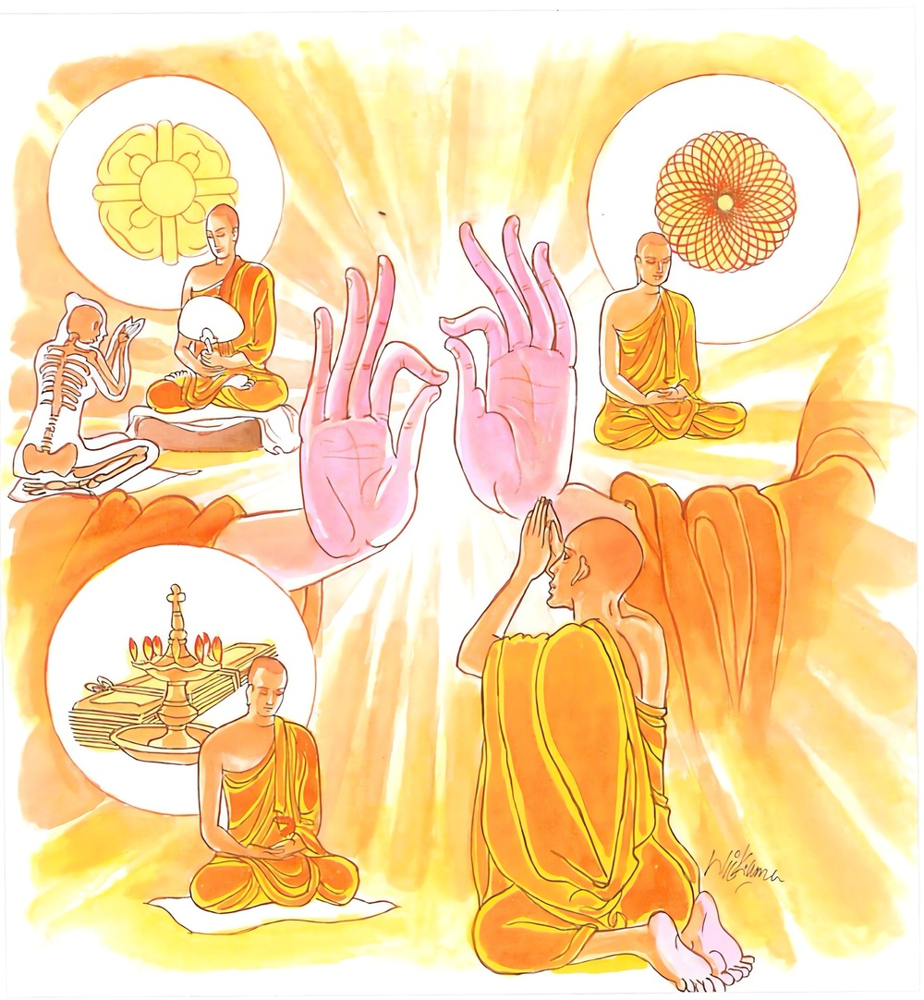
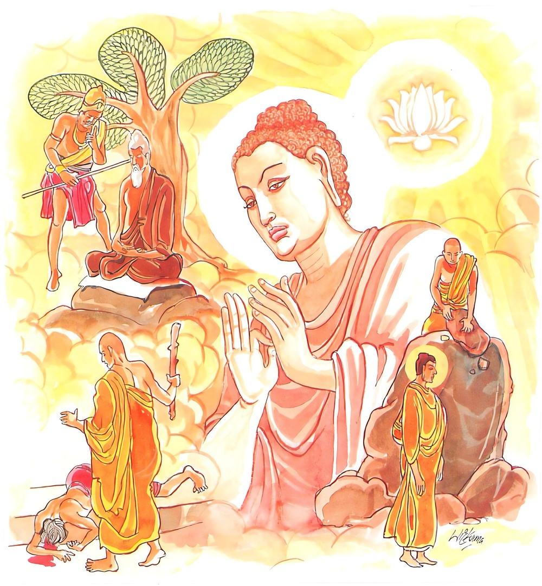
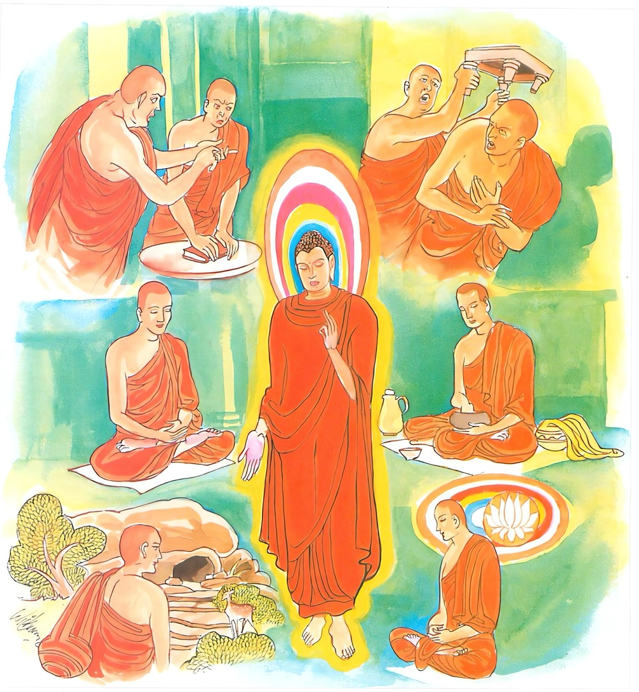

14-4 ආනන්ද තෙරුන්ගේ උපොසථ ප්රශ්න පුවත
මෙම කතාව සද්ධර්ම සාගරයෙන් ද කියවන්න.
සබ්බපාපස්ස අකරණං කුසලස්ස උපසම්පදා
සචිත්තපරියොදපනං එතං බුද්ධාන සාසනං.
(ප්රාණවධාදි) සියලු අකුශලකර්ම නොකිරීම ද, (ගේ හැර පැවිදි වූ තැන් පටන් රහත් පලයට පැමිණෙන තැන් දක්වා සියලු ලොවි ලොවුතුරා කුසල් ඉපැදැවීම ද, උපදවන ලද කුසලයේ වැඩීම ද, (පංච නීවරණ කෙරෙන්) තමා සිත පිරිසිදු කිරීම ද, යන මේ සියල්ල සියලු බුදුවරයන් ගේ අනුශාසන යි (අවවාද යි).

ඛන්තී පරමං තපො තිතික්ඛා
නිබ්බාණං පරමං වදන්ති බුද්ධා
න හි පබ්බජිතො පරූපඝාතී
සමණො හොති පරං විහෙඨයන්තො.
(පරාපකාර පරාපවාද ඉවැසීම යන මේ) අධිවාසනක්ෂාන්තිය (අකුශලධර්ම තවන හෙයින් මේ ශාසනයෙහි) උතුම් තපසෙක. සියලු බුදු පසේබුදු රහත්හු නිවන (ශාන්තතාප්රණීතතාදි සර්වාකාරයෙන්) උතුමැ යි කියත්. පරහට හිංසා කරණ සුලු වූයේ (හෙවත් මෙරමා දිවි නසන සුලු වූයේ) පැවිදි නම් නො වෙයි. (පාණීප්රහාරාදියෙන්) පරහට වෙහෙස දෙන්නේ ද මහණ නම් නො වන්නේ ය.

අනූපවාදො අනූපඝාතො පාතිමොක්ඛෙ ච සංවරො
මත්තඤ්ඤුතා ච භත්තස්මිං පන්තඤ්ච සයනාසනං
අධිචිත්තෙ ච ආයොගො එතං බුද්ධාන සාසනං.
(ජාත්යාදියෙන් පරහට ආක්රෝශාදි වශයෙන්) වචසින් උපවාදයක් නොකිරීම ද, (පාණිප්රහාරාදි වශයෙන් පරහට) කයින් උපඝාතයක් නොකිරීම ද, පාතිමොක්ඛයෙහි සංවරය ද, (පාමොක් සිල් රැක්ම ද), ආහාරයෙහි මාත්රඥතාව ද (හෙවත් අහර පිරියෙස්නෙහිත් පිළිගැන්මෙහිත් වැළැඳීමෙහිත් පරහට දීමෙහිත් පමණ දන්නා බව ද) (නොහොත් දැහැමින් සෙමෙන් උපන් සතර පසය පස්විකා වළඳන බව ද) (ජනවිවික්ත) ප්රාන්ත ශයනාසනයෙහි ඇල්ම ද (හෙවත් ගමට දුරු වූ ගැඹුරු වල්හි වූ සෙනස්නෙහි ඇල්ම ද), රූපාරූප අෂ්ටසමාපත්තියෙහි සතතයෙන් යෙදීම ද යන මේ සියල්ල සියලු බුදුවරයන් ගේ අනුශාසන යි (අවවාද යි).

"සබ්බ පාපස්ස අකරණං" යන මේ ධර්ම දේශනය ශාස්තෲන් වහන්සේ ජේතවන විහාරස්ථානයේ වැඩසිටිය දී ආනන්ද තෙරුන්ගේ ප්රශ්නයක් අරමුණු කරගෙන දේශනා කළහ.
තෙරුන් වහන්සේ දිවා ස්ථානයේ සිටිමින් මෙසේ සිතූහ. බුදුරජාණන් වහන්සේ විසින් සම්බුදුවරයන්ගේ දෙමාපියෝ, ආයුෂ ප්රමාණය, බෝධිය, ශ්රාවක සන්නිපාත, අග්රශ්රාවකයින්, උපස්ථායක, මේ සියල්ල පවසා තිබේ. උපොසථය කියා නැත. මෙයට හේතුව කුමක්ද? ඒ උතුමන්ගේ මේ උපෝසථයද අනෙකක්දැයි උන්වහන්සේ බුදුන්වෙත එළඹ මේ කරුණ විමසුහ. යම් සේ ඒ බුදුවරයින්ගේ කාලභේදය පමණක් ද ගාථා භේදයක් නොවීද? විපස්සි බුදුරජාණන් වහන්සේ වසර හතකට වරක් උපෝසථය කළහ. එක් දිනෙක දෙනලද අවවාදය වසර 7කට යෝග්ය වේ. සිබි හා වෙස්සභූ බුදුවරු වසර 6කට වරක් උපොසථය කළහ. කකුසඳ කෝණාගම බුදුවරු වසරක් පාසා ද කාශ්යප බුදුහු මාස 6කට වරක් උපෝසථය කළහ. එක් දිනෙක දෙන ලද අවවාදය මාස හයකට ප්රමාණවත්වීය. මේ නිසා බුදුරජාණන් වහන්සේ කාල ප්රභේද පවසා සියල්ලගේ උපෝසථ එකම උපෝසථයක් කරමින් මේ ගාථාව පැවසුහ.
නො කරනු පවක් දිවි හිමියෙන් කිසි විටෙක
රැස් කළ මැනවි දස කුසලම හැම දිනක
පිරිසිදු කරනු සිත - සිතිවිලි හැම තැනක
බුදු අනුසසුන මෙය පිහිටනු මැන සිතක
තවුසන්ගේ ගුණය ඉවසුම නමැති දෙයයි
නිවනම සුවය බව තුන්බුදුවරුම කියයි
අන් පණ නසන්නා පිරිවැජියකුද සැකයි
වයිරය සිත ඇතොත් ඔහු මහණෙකුද නොවෙයි
දෑ කුල බෙයින් අන් අය පහතට නොහෙළා
පාමොක් දෙසා සංවර සීලය රැකලා
වැඩිපුර නොකා සමවත් මග පල ලබලා
සැනසුම, මහණකම බව ඇත බුදුහිමි දෙසලා
1 සබ්බ පාපස්ස අකරණං කුසලස්ස උපසම්පදා
සචිත්ත පරියෝදපනං එතං බුද්ධාන සාසනං
2ඛන්තී පරමං තපොති තික්ඛා
නිබ්බා නං පරමං වදන්ති බුද්ධා
නහි පබ්බ ජිතො පරූප ඝාති
සමණො හොති පරං විහෙඨයන්තො
3අනුපවාදො අනුපඝාතො පාතිමොක්ඛෙච සංවරෝ
මත්තඤුඤු තා ච භත්තසමිං පන්ථංසයනාසනං
අධිචිත්තෙව ආයොගො එතං බුද්ධාන සාසනං
සියළු පව් නොකිරීම කුසල් රැස් කිරිම තම සිත පිරිසිදුව තබාගැනීම මෙය බුදුවරුන්ගේ අනුශාසනයයි ඉවසීම පරම තපසයි. බුදුවරු නිවන පරම සුවය ලෙසට දක්වති. පැවිදිවරු අන්අය ඝාතනය නොකරති අන් අයට හිංසා කිරිම පැවිද්දෝ නොකරති. චෝදනා නැගීම පරපණ නැසීම නොකරති. ප්රාතිමෝක්ෂ සංවරය, භෝජනයේ ප්රමාණය දැනගැනීම විචික්ත සෙනසුන් ඇසුර අධිචිත්තය වැඩිමේ ගති බුදුන්ගේ අනුශාසනයයි. එහි සබ්බපාපස්සති - සියළු අකුශල කර්මයි. උපසම්පදා - අභිනිෂ්ක්රමණයේ සිට අර්හත් මග දක්වා කුසල් ඉපදවීම. උපන් කුසල වැඩීම අදහස් කෙරේ. අනුපවාදෝ - යනු උපවාද රහිත වීම ම අනුපවාදයයි. අනුපඝාතො යනු අනුන්ට පහර නොදීමම අනුපඝාතයයි. සචිත්ත පරියොදපනං පංචනීවරණයන් දුරුකොට තමන්ගේ සිත තුළ පිරිසිදුකම ඇතිකරලීමයි. එතං බුද්ධාන සාසනං - මෙය සියළු බුදුවරයාගේ අනුශාසනයයි. ඛන්ති - යම් ඒ ඉවසීම සංඛ්යාත ක්ෂාන්තිය පරමං උතුම් තපො තපසයි නිබ්බාණං පරමං වදන්ති බුද්ධො බුදු පසේ බුදු අනුබුදු යන තුන් බුදුවරු නිවන උතුම් යයි පවසති. නහි පබ්බජිතො - පැවිදි අය අත් ආදියෙන් පරං අන් අය උපහනන්තො වෙහෙසට පත් නොකරති. සාතනය නොකරති. පරූපඝාති අන් අයට උපවාද නොකරති. ඝාතනය නොකරති. සමණො - ශ්රමණයෝද පෙර කී අයුරින් අනුන් වෙහෙසට පත් නොකරති. පාතිමොක්ඛ යනු - ජ්යෙෂ්ඨ සීලයයි සංවරොති සංවරය නම් වසා තැබීමයි මත්තඤ්ඤතා - මාත්රඥතාව නම් පමණ දැනගැනීමයි. පන්තං යනු විවේකයයි. අධිචිත්ත යනු අෂ්ඨසමාපත්ති සංඛ්යාත අධි විත්තයයි. ආයොගො - පයොගකරණයයි. අනුපවාදන නම් වාචසික සීලයයි. අනුපඝාත කායික සීලයයි. පාති මොක්ඛෙව සංවර නම් ප්රාතිමෝක්ෂ සීලය මෙන්ම ඉන්ද්රිය සංවරයයි. පමණ දැනීම සුදුසු සෙනසුන් ඇසුර අධිචිත්ත නම් අෂ්ඨ සමාපත්තියි මෙයින් ත්රිශික්ෂා කියැවේ. දෙසුම අවසන බොහෝදෙන සෝවාන් ආදී ඵලයන්ට පත්වූහ.